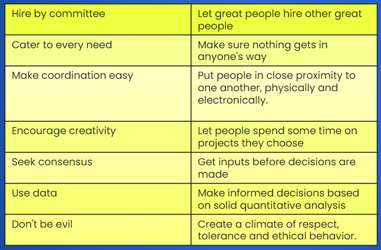

Modern Management Approaches
The concepts, models, and ideas discussed so far helped set the stage for continuing developments in management thought. These include the use of quantitative analysis and tools, a systems view of organizations, contingency thinking, commitment to quality, the role of knowledge management, learning organizations, and the importance of evidence-based management. Each of these will be explained in this section.
Modern management approaches include the use of:
Click and Reveal
Quantitative Analysis and Tools
Select to learn more.
There is a renewed emphasis on how to use quantitative analysis to mine available data and make management decisions; this is an area known as Analytics, the systematic analysis of large databases to solve problems and make informed decisions.
A typical quantitative approach to managerial problem-solving proceeds as follows:

A problem is encountered.
It is systematically analyzed.
Appropriate mathematical models and computations are applied.
The optimum solution is identified.
Example Problem:
A grocery store is getting complaints from customers that waiting times are too long for checkouts during certain times of the day.
Click and Reveal
Quantitative Approach
Select to learn more.
Network models break large tasks into smaller components and diagram them in step-by-step sequences. This allows project managers to better analyze, plan, and control timetables for completion of many different activities.
Click and Reveal
Organizations as Systems
Select to learn more.
An organization is seen as a system of interrelated parts or subsystems that work together to achieve a common purpose. It is helpful to view organizations as open systems that interact with their environments in the continual process of transforming inputs—people, technology, information, money, and supplies—into outputs—goods and services for their customers and clients.
Organizations as complex networks of interacting subsystems.

Click and Reveal
Contingency Thinking
Select to learn more.

Contingency thinking and its implications extend to all of the management functions—from planning and controlling for diverse environmental conditions to organizing for different strategies to leading in different performance situations.
Click and Reveal
Quality Management
Select to learn more.
Total quality management is an organization-wide commitment to continuous improvement, product quality, and customer needs.
Quality Management Components:
Quality Planning: The process of identifying the quality standards relevant to the project and deciding how to meet them.
Quality Improvement: The purposeful change of a process to improve the confidence or reliability of the outcome.
Quality Control: The continuing effort to uphold a process’s integrity and reliability in achieving an outcome.
Quality Assurance: The systematic or planned actions necessary to offer sufficient reliability so that a particular service or product will meet the specified requirements.
Click and Reveal
Knowledge Management and Organizational Learning
Select to learn more.
The term knowledge management describes the processes through which organizations use information technology to develop, organize, and share knowledge to achieve performance success.
Chief Knowledge Officer (CKO):
You can spot the significance of knowledge management with the presence of an executive job title—chief knowledge officer (CKO). The CKO is responsible for energizing learning processes and making sure that an organization’s portfolio of intellectual assets is well-managed and continually enhanced.
Click and Reveal
Learning Organization
Select to learn more.
A learning organization is described as encouraging and helping all members to learn continuously while emphasizing information sharing, teamwork, empowerment, and participation. A learning organization continuously changes and improves, using the lessons of experience.
Click and Reveal
Google's Management Principles
Select to learn more.
When Google’s CEO Eric Schmidt and his colleague Hal Varian describe their guiding management principles, they very much seem to fit the learning organization prototype. The Google principles of managing for knowledge development and organizational learning are:

Click and Reveal
Evidence-Based Management
Select to learn more.
Evidence-based management involves making decisions based on hard facts about what really works.
The starting point for evidence-based management is that management decisions should be based on a combination of critical thinking and the best available evidence. Evidence may come from scientific research, but internal business information and even professional experience can count as ‘evidence’. In principle, then, all managers base their decisions on ‘evidence’.
Let's Watch the Video!
Click and Reveal
Evidence
Select to learn more.
Evidence may come from scientific research, but internal business information and even professional experience can count as ‘evidence’. In principle, then, all managers base their decisions on ‘evidence’.